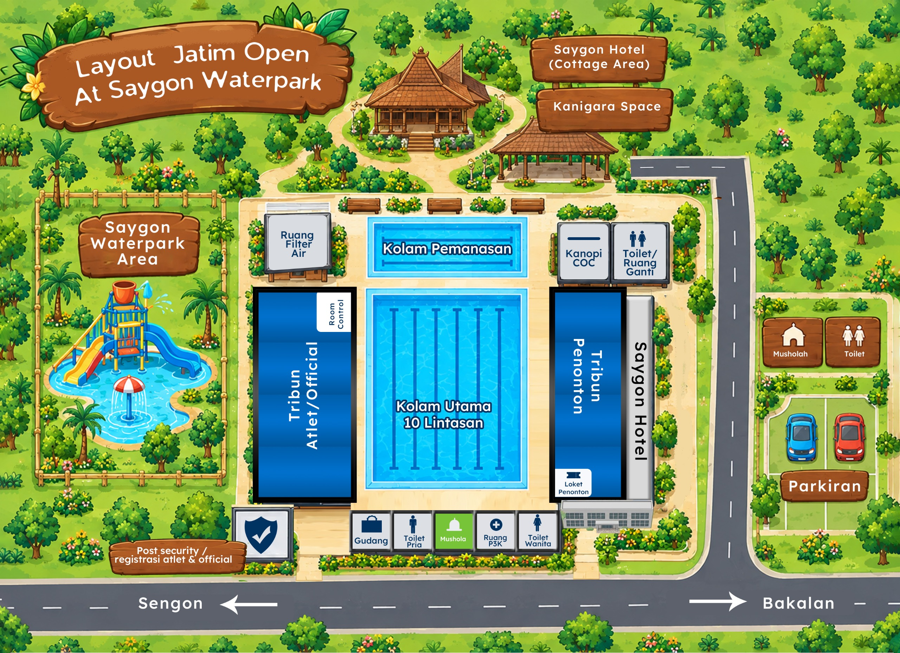

Menghadirkan area acara yang terbagi dalam beberapa zona utama yang saling terhubung. Setiap jalur dirancang untuk memudahkan pengunjung menuju area pertandingan, fasilitas pendukung, pusat informasi, hingga area liburan di Saygon Waterpark.
Peta di atas menandai fasilitas dan jalur menuju event Jatim Open 2026 di Saygon Waterpark sebelum tiba di lokasi.
Kejuaraan renang antarklub se-Indonesia
2 - 4 Oktober 2026
Olympic pool, Saygon Waterpark
Ada sesi pagi dan sore
Tersedia 2 tribun masing-masing kapasitas 1000 dan 2000 orang
Ruang medis terletak satu area dengan olympic pool (lihat denah)
Ada beberapa toilet yang bisa digunakan (lihat denah)
Ada beberapa ruang ganti yang bisa digunakan (lihat denah)
Tidak
Mushola terletak di area parkir kendaraan
Selain booth di area olympic, ada di area Kanigara Space)
None
Sementara masih di tribun utara
Saygon Waterpark menyediakan ATM BNI di dekat pos securitys
Minimarket terdekat berjarak 200 M dari Saygon Waterpark
None
Ramah dan disediakan crew bertugas
Tiket penonton seharga Rp10.000,- / orang
Ya
Tiket berlaku 1 hari
Anak di bawah tinggi 90cm free tiket masuk
Atlet, coach, dan official mendapatkan akses khusus
Di luar official tim membeli tiket
Tidak bisa
Ya
Ya
Selama kapasitas masih tercukupi, pembelian tiket akan terus dilayani
Tidak
Tidak
Tidak
Tidak
Boleh selama pada hari yang sama
Ya
2 Akses masuk ke venue, untuk official tim dan penonton
Berbeda
Ya
Ya
Tidak
Ya
Disediakan area parkir dekat venue
None
None
None
Disediakan area parkir untuk bus
Ya
Rp3.000
Rp5.000
Rp10.000
Ya
Tidak
Tidak
Bisa
Ya
Ya, berada di Saygon Hotel
1 Area dengan Saygon Hotel
Menghubungi hotline atau panitia penyelenggara
None
Saygon Group telah merekomendasikan beberapa penginapan terdekat
Boleh
Boleh
Boleh
Selama menginap di Saygon Hotel akan mendapatkan sarapan pagi
Ya
Ya, tergantung traffic
Ya
Di sekitar area Saygon Waterpark
Khusus yang menginap di hotel rekomendasi disediakan
Tidak
Tidak
Tidak
Tidak
Kehilangan barang diharapkan langsung menghubungi panitia bertugas
None
Selain Saygon Waterpark juga dapat mengunjungi Kurma Park
None
None
None
None
None
None
None
None
Temukan jadwal kunjungan, harga tiket, dan panduan lengkap lainnya di situs resmi kami.
Kunjungi Website Utama